Names on Nodes: MathML Definitions (Version 1.1)
1 P.O. Box 292304 Los Angeles, CA, USA 90027; keesey@gmail.com
First Draft Published Online 2009 July 29
Version 1.0 Published Online 2010 February 21
Version 1.1 Published Online 2010 February 25
Abstract
Phylogenetic nomenclature is a type of biological nomenclature which ties taxonomic names to taxa using algorithms that rely on phylogeny (i.e., patterns of ancestry and descent). Unlike earlier forms of biological nomenclature (e.g., Linnaean, rank-based), the application of a name to a taxon is unambiguous under an appropriate phylogenetic hypothesis. Phylogeny may be modeled as directed, acyclic graphs, with taxonomic units as vertices and immediate ancestor-descendant relations (i.e., parent-child relations) as arcs (directed edges) connecting them. Because phylogeny can be modeled mathematically, phylogenetic definitions may be expressed as mathematical formulae. Mathematical formulae, in turn, may be expressed using an extensible computer language called MathML. Expressing phylogenetic definitions in MathML requires the definition of certain entities. Here I review the relevant mathematical and biological concepts, terms, and notations, and provide an overview of MathML. I correlate these concepts to each other and, finally, define the entities needed to express phylogenetic definitions in MathML.
Table of Contents
Introduction
History
Most of the phylogenetic and nomenclatural concepts are taken from the International Code of Phylogenetic Nomenclature (or, the PhyloCode for short) and literature cited by it. The initial discussions on creating a mathematical foundation for phylogenetic nomenclature took place circa 2001 on the PhyloCode Mailing List, with Nathan Wilson first suggesting algorithms for node- and branch-based definitions. In 2004, I began planning an application entitled Names on Nodes (originally Names on NEXUS) which would automate the application of phylogenetically-defined names to phylogenetic hypotheses, using the algorithms first proposed on the mailing list. I developed these concepts further and presented them at the Second International Phylogenetic Nomenclature Meeting at Yale University, New Haven, Connecticut in 2006. (See the report by Laurin and Cantino.) In 2007, I authored a paper entitled A Mathematical Approach to Defining Clade Names, with Potential Applications to Computer Storage and Processing, detailing the mathematical concepts and how they might be represented in MathML. This document represents a refinement of the concepts in my 2007 paper. Much is the same or similar. Differences include (but are not limited to):
- Changes to some of the notation and terminology.
- Removal of the cladogen (formerly "cladogenetic set") functions and alteration of clade functions.
- Better integration with MathML.
- Emphasis on taxonomic units, rather than individual organisms, and on contextual assertions, rather than absolute facts.
Some concepts from my 2007 paper have been omitted (notably those involving distance metrics), but may be included in a future version.
Names on Nodes is an open-source project.
The progress of the project, including this document, can be viewed online at http://code.google.com/p/namesonnodes/.
A General Review of Mathematical Concepts, Terms, and Notation
Some terminology and notation varies across different contexts. Where possible, I have followed MathML's terminology and default notation. Some exceptions have been made for certain logical symbols which are more easily read as words than as symbolic characters, e.g., and instead of ∧, for all instead of ∀, etc.
The symbol := means "is defined as".
Collections
A collection is an entity which consists of zero or more distinct objects. Objects in a collection are members of the collection. A collection with one member is a singleton.
Sets
Set with members. This diagram ilustrates the set {x, y, z}. Elements a and b are not members.
A set is an unordered collection. When an object, x, is a member of a set, S, this is denoted x ∈ S. Sets may themselves be members of other sets. Sets may be denoted in the following ways:
- Extensionally, as a list of members: {x, y, z}
- Intensionally, with a rule that determines membership: {x | x > 1}, {x | x exhibits a cellular nucleus}
- Using a defined symbol or name: ∅, U, Mammalia, YPM-VP 1450
An intensional definition may explicitly limit members to a given superset: {x ∈ Mammalia | x is extant}.
The empty set is the set which includes no members, denoted as ∅.
If all members of a set, A, are members of a set, B, then A is a subset of B, denoted A ⊆ B. B is a superset of A. Note that all sets are subsets and supersets of themselves. If A ⊆ B and A ≠ B, then A is a proper subset of B, denoted A ⊂ B, and B is a proper superset of A. Note that ∅ is a subset of all sets, and a proper subset of all nonempty sets.
Set operations. From top to bottom: union, intersection, and difference.
The operations of union, intersection, and difference may be applied to sets:
- Union. A ∪ B := {x | x ∈ A or x ∈ B}
- Intersection. A ∩ B := {x | x ∈ A and x ∈ B}
- Difference. A − B := {x ∈ A | x ∉ B}
Examples. If A = {1, 2} and B = {2, 3}, then A ∪ B = {1, 2, 3}, A ∩ B = {2}, A − B = {1}, and B − A = {3}. Note that the order of arguments only matters for set difference.
A partition of a set, S, is a set of subsets of S, such that no sets in the partition overlap and all members of S are members of some set in the partition. A partition, P1, is a refinement of another partition, P2, if every member of P1 is a subset of some member of P2. P1 is finer than P2, and P2 is coarser than P1. This is written P1 ≤ P2.
Example. If S = {1, 2, 3}, then the partitions of S are {∅, S}, {∅, {1}, {2, 3}}, {∅, {1, 2}, {3}}, {∅, {1, 3}, {2}}, and {∅, {1}, {2}, {3}}. The partition {∅, {1}, {2}, {3}} is a refinement of {∅, {1}, {2, 3}}, which is a refinement of {∅, S}.
The power set of a set, S, is the set of all subsets of S, denoted 2S.
Example. If S = {1, 2, 3}, then 2S = {∅, {1}, {2}, {3}, {1, 2}, {1, 3}, {2, 3}, S}.
Lists
A list is an ordered collection of elements, denoted as a series of elements within brackets, e.g., [x, y, z]. Unlike sets, lists may have the same member multiple times, e.g., [x, x, y]. A list with two members is an ordered pair. A list with three members is an ordered triple. A list with n members is an n-tuple. The nth member of a list, p, is denoted pn.
Example. If p = [x, y, z], then p1 = x, p2 = y, and p3 = z. The list, p, is an ordered triple (3-tuple).
A Cartesian product of two sets, A and B, is the set of all ordered pairs wherein the first element is a member of A and the second element is a member of B. This product is denoted as A × B. The product A × A may also be denoted as A2. Cartesian products may be generalized to cover any whole number, n, of sets, in which case the members of the product are n-tuples.
Example. {1, 2} × {3, 4} = {[1, 3], [1, 4], [2, 3], [2, 4]}.
Relations
A relation is a set of ordered pairs. If [x, y] is a pair in the relation R, then this is denoted as x R y. The first element in such a pair may be termed the predecessor, and the second element the successor. If x R y and x ≠ y, then x is a proper predecessor of y and y is a proper successor of x. If x R z and there is no other element, y, such that x R y and y R z, then x is an immediate predecessor of z and z is an immediate successor of x.
The expression R[x] denotes the set {y | x R y}. For example, >[0] indicates the set of all negative numbers.
A partial order is a relation with the properties of reflexivity, antisymmetry, and transitivity:
- Reflexivity. For all x, x R x.
- Antisymmetry. For all x, y, if x R y and x R y, then y R x.
- Transitivity. For all x, y, z, if x R y and y R z, then x R z.
The transitive closure of a relation, R, is the smallest (i.e., least inclusive) transitive relation that includes R. (If R is transtiive then it is its own transitive closure.)
If R is a partial order and x R y or y R x, then x and y are comparable. If all elements in a set can be compared to each other, then the set is a chain. If no two different elements in a set are comparable, then it is an antichain.
Graphs
Graphs. Circles represent vertices, lines represent edges, and arrows represent arcs (directed edges). From top to bottom, an undirected graph, a directed graph (or digraph) which is cyclic, and a directed graph which is acyclic.
A graph is an entity containing a set of objects, called vertices, and connections of the vertices, called edges. A graph may be defined as a type of ordered pair, in which the first element is the vertex set and the second element is the edge set: [V, E]. In an undirected graph, each edge is a set of two vertices, indicating that those vertices are connected, or incident. In a directed graph, or digraph, each edge is an ordered pair of vertices, indicating that the first element, or head, connects to the second element, or tail. Edges in directed graphs may also be called arcs.
A walk in a graph is a list of vertices in which each vertex is incident to the next vertex in the list. A path is a walk in a directed graph wherein some arc in the graph points from each vertex to the next vertex in the list. A cycle is a path which begins and ends with the same vertex. A directed graph is said to be acyclic if there are no cycles in it.
Functions
A function maps an element, called an argument, to a value. Formally, a function may be defined as an ordered triple of three sets: f := [X, Y, F]. The final set, F, is a set of ordered pairs, wherein the first element (a member of X) is the argument and the second element (a member of Y) is the value. There can be only one ordered pair per argument. If an ordered pair, [x, y], is a member of F, this may be denoted as f(x) = y. If the argument is a list, instead of f([a1, a2, … an]), it is customary to simply write f(a1, a2, … an). Sometimes this may be written a1 f a2 f … an (infix notation).
The set including all of a function's arguments is the domain. All values of the function are within the codomain. The set of all values is the image, which is a subset of the codomain. If a function, f, has domain X and codomain Y, this is denoted as f: X → Y.
The composite of two functions, f and g, is a function which uses the value of g as an argument for f. Composition is written f ∘ g, so that (f ∘ g)(x) = f(g(x)). Note that the codomain of g must be a subset of the domain of f. If g : X → Y and f : Y → Z, then (f ∘ g) : X → Z.
A General Review of Biological Concepts and Terms
Taxonomic Units
Within the context of a study, life forms are divided into discrete sets. The finest sets (i.e., the sets which are not subdivided) may be referred to as taxonomic units or simply units. A unit may represent any of the following levels of biological organization:
- An organism, i.e., an individual living entity. This kind of unit may be conceptualized as a singleton set.
- A population, i.e., a set of interbreeding and/or closely related organisms, generally within a given spatiotemporal region. Some populations are recognized as species according to various criteria.
- A more inclusive set of related organisms.
In all cases, all members of a taxonomic unit must be related to each other in ways that do not involve organisms outside the unit.
It is important to emphasize that what constitutes a taxonomic unit is context-dependent. A unit in one context may be a superset of a unit in a different context.
An operational unit is a unit represented by concrete data. A hypothetical unit is a unit whose existence is inferred.
A unit may be considered extant (living as of or after a certain time) or extinct (no longer living at that time).
Taxonomy
A nonempty set of organisms is a taxon (plural: taxa). Taxonomic units are the least inclusive taxa used in a given context. A taxon may be conceptualized as a union of some number (one or more) of taxonomic units (which is how Names on Nodes treats them).
A taxon whose members are all within another taxon is a subtaxon of that other taxon. A taxon which includes all members of another taxon is a supertaxon of that taxon. The most inclusive taxon is the universal taxon, which is a superset of all taxa. A unit which is a subtaxon of another taxon is a subunit. (Note that there is no such thing as a "superunit"; if a taxon has subsets in a certain context, then it is not a unit.)
A taxonomy is a scheme or system for recognizing certain taxa and relating them as supertaxa and subtaxa.
A taxon is extant if any of its members are extant, and extinct if all of it members are extinct.
A taxonomic name is a word or series of words which signifies a taxon. A nomenclatural code is a set of rules which taxonomic names may be governed by.
Specimens
In addition to taxonomic names, taxa may also be referenced using specimens. A specimen is an object which has been catalogued as part of a specimen collection. A specimen collection is often indicated by an abbreviation of its name, specified within the context, e.g., "Yale Peabody Museum: Vertebrate Paleontology Collection" may be abbreviated as "YPM-VP". A specimen within a collection may be indicated by the collection's name or abbreviation followed by an identifier that is unique within the collection, e.g., YPM-VP 1450. A specimen may have multiple identifiers if it has been transferred from one collection to another. For example, AMNH 973 and CM 9380 are the same specimen.
A specimen may represent no organisms (e.g., a mineralogical specimen), one organism (e.g., a fossil skeleton), or multiple organisms (e.g., a microbe slide).
Character States
Taxa may be defined intensionally using a description of a necessary criterion, that is, a character state. Organisms exhibiting the state are members of the taxon. Valid states must be discrete and absolute, that is, organisms cannot partially exhibit them.
Examples. "Cellular nucleus present" is a valid state, assuming that "cellular nucleus" has been defined in such a way that it cannot be only partially present. "Large leaf size" is not a valid state, since it is relative, not absolute.
Taxa may be defined using a set of character states. If all of the states are required for membership, the taxon is monothetic. If it is only required that one or more of the states be exhibited, the taxon is polythetic.
Taxonomic names are not usually defined according to character states, but the taxa that the names signify may be diagnosed by character states. For example, the taxon referred to as "Eukaryota" is diagnosed by the presence of cellular nuclei, but "Eukaryota" is not necessarily defined by that character state.
Rank-Based Nomenclature
Taxonomic names may be loosely defined using rank-based definitions. A taxon is rank-defined by specifying a type, which is either a type subtaxon or a union of one or more type specimens, and a rank, which indicates relative inclusivity of the taxon. The type is a mandatory subset of the taxon. Commonly used ranks are, from least to most inclusive, species, genus, family, order, phylum (zoology) or division (other disciplines), and kingdom. Many others exist as well.
Note that rank-based definitions do not dictate any criteria for membership, apart from the requirement that the type form a subset.
Some taxa are ranked but do not have types. For example, Mammalia is commonly considered to have the rank of "class", but it has no type. This name exists under rank-based nomenclature, but is not defined in any way.
If a taxonomic name, "X", is defined as having a taxon with name "Y" as its type, and "Y" is defined as having specimen Z as its type, then Z may be called the finest type of "X".
A rank-based code is a nomenclatural code which governs rank-based definitions. Currently there are four in effect:
| Name of Rank-Based Code | Abbreviation | Organisms Covered |
|---|---|---|
| International Code of Botanical Nomenclature | ICBN | plants, fungi, some other eukaryotes |
| International Code of Zoological Nomenclature | ICZN | animals, some other eukaryotes |
| International Code of Nomenclature of Bacteria | ICNB | extant prokaryotes |
| International Code of Nomenclature for Cultivated Plants | ICNCP | cultivated plants |
(Note that there is some overlap between the ICBN and the ICZN.)
Examples. Under ICZN rules, the name "Tyrannosaurus rex" refers to a taxon of the species rank typified by CM 9380 (formerly AMNH 973). Therefore, Tyrannosaurus rex must include the organism represented by that specimen. The name "Tyrannosaurus" refers to a taxon of genus rank typified by Tyrannosaurus rex, so it must be a supertaxon of that species (and, by extension, it must include the organism represented by CM 9380). The name "Tyrannosauridae" refers to a taxon of family rank typified by Tyrannosaurus, so it must be a supertaxon of Tyrannosaurus.
Phylogeny
Phylogeny as a graph. Circles (vertices) represent organisms or taxonomic units. Arrows (arcs) represent immediate descent.
Every organism has one or more ancestors and/or one or more descendants. An immediate ancestor is a parent, and an immediate descendant is a child. The pattern of ancestry and descent among organisms is phylogeny.
Taxa, including taxonomic units, may also be related in terms of ancestry and descent. If all members of one taxon, A, are ancestral to all members of another taxon, B, then A is ancestral to B.
A phylogenetic hypothesis is an arrangement of taxonomic units into ancestor-descendant relationships. The resolution of a phylogenetic hypothesis refers to the size of its taxonomic units. For example, a hypothesis with the highest resolution would use singleton units representing individual organisms, while a hypothesis with low resolution might use large taxa as units.
Phylogenetic hypotheses function as contexts wherein algorithms may be applied. Within such a context, immediate ancestor units may be called "parents" and immediate descendant units may be called "children", with the understanding that this is not necessarily the same as parents and children at the organismal level, depending on the resolution of the hypothesis.
Minimal and maximal units. At left, the minimal units are shown in black; at right, the maximal units.
Although a fuller correlation will be made further on, I note here that the biological term "ancestor" correlates to the mathematical term "proper predecessor", and the biological term "descendant" correlates to the mathematical term "proper successor". Therefore, we may say that a predecessor of a taxonomic unit is any ancestor of that unit, or that unit itself. Conversely, a successor of a unit is any descendant of that unit, or that unit itself. I also note that the terms "maximal" and "minimal" may be applied to units with regard to their supertaxa. The minimal subunits of a taxon are those which are not descended from any other subunit. The maximal subunits of a taxon are those which are not ancestral to any other subunit.
The predecessors of a taxon constitute the union of all units which are predecessors of all subunits of that taxon. The successors of a taxon constitute the union of all units which are successors of all subunits of that taxon. The common predecessors of a taxon constitute the intersection of the predecessors of all subunits. The common successors of a taxon constitute the intersection of the successors of all subunits.
Predecessors. The left image highlights two units in the phylogeny. The center image shows their predecessors (including the units themselves). The right image shows their common predecessors.
Successors. The left image highlights two units in the phylogeny. The center image shows their successors (including the units themselves). The right image shows their common successors.
Exclusive Predecessors. The top left image indicates the internal taxon, and the top right image indicates the external taxon. The middle left image shows the internal predecessors, and the middle right image shows the external predecessors. The bottom image shows the exclusive predecessors.
Apomorphic Predecessors. From top to bottom: the representative taxon, the apomorphic taxon, the representative taxon's predecessors, and the apomorphic predecessors.
The exclusive predecessors of a taxon, A, with regard to another taxon, Z, constitute the common predecessors of A except any which are predecessors of any subunit of Z. A may be termed the internal taxon and Z may be termed the external taxon.
The apomorphic predecessors of a taxon, A, with regard to another (generally character-based) taxon, M, constitute the common predecessors of A which are also subunits of M. A may be termed the representative taxon and M may be termed the apomorphic taxon.
Lineages
A lineage is a sequence of taxonomic units wherein each unit is preceded by one of its parents and/or followed by one of its children.
The synapomorphic predecessors of a taxon, A, with regard to taxon M, constitute the union of all apomorphic predecessor units for which there is at least one lineage for every subunit of A satisfying the following conditions:
- The first unit in the lineage (i.e., the ancestor of all other units) is the apomorphic predecessor unit.
- The last unit in the lineage (i.e., the descendant of all other units) is the subunit of A.
- All units in the lineage are subunits of M.
Synapomorphic Predecessors. The synapomorphic predecessors, using the representative taxon and the apomorphic taxon from the previous figure.
Cladogens
Cladogens. From top to bottom: a specifier set (N1) and its node-based cladogen (N2); an internal taxon (B1), an external taxon (B2), and the resultant branch-based cladogen (B3); a representative taxon (S1), an apomorphic taxon (S2), and the resultant synapomorphic cladogen (S3).
A taxon which fulfills the following requirements (in a given phylogenetic context) is here termed a cladogen (new term; previously "cladogenetic set" in Keesey [2007]):
- No subunit of a cladogen can be ancestral to any other subunit.
- There must be at least one unit which is a common successor of all subunits of the cladogen.
All taxonomic units are cladogens, but larger cladogens may include multiple subunits.
A node-based cladogen consists of the maximal common predecessors of a taxon.
A branch-based cladogen consists of the minimal exclusive predecessors of an internal taxon with regard to an external taxon.
An apomorphy-based cladogen consists of the minimal synapomorphic predecessors of a representative taxon with regard to an apomorphic taxon.
Clades
If a taxon is the union of a cladogen and all descendants of all of the cladogen's subunits, then it is monophyletic. Monophyletic taxa are called clades.
A node-based clade consists of a node-based cladogen and all descendants of all of its subunits. A branch-based clade consists of a branch-based cladogen and all descendants of all of its subunits. An apomorphy-based clade consists of an apomorphy-based cladogen and all descendants of all of its subunits.
A crown clade is a type of clade wherein the minimal subunits form the node-based cladogen for some union of extant units. A total clade is a type of clade wherein the minimal subunits form the branch-based cladogen for some internal taxon whose subunits are all extant and some external taxon whose subunits are all extant. Every crown clade has a corresponding total clade where the internal taxon is the union of all extant subunits of the crown clade and the external taxon is the union of of all other extant units.
Crown and total clades. If the image at left represents all extant taxonomic units, then the image in the center represents a crown clade and the image at right represents the corresponding total clade.
Non-Clades
Non-clades. From top to bottom, using the same phylogeny as in the previous figure: a paraphyletic taxon, a stem taxon, and a polyphyletic taxon.
If a taxon's minimal subunits form a cladogen, but the taxon does not include all descendants of that cladogen, then it is paraphyletic. (Note that cladogens themselves are paraphyletic, with the exception of taxonomic units that have no descendants. Such terminal taxonomic units are clades themselves, since they consist of a cladogen and all of its descendants.)
A special type of paraphyletic taxon is a stem taxon, which is formed by subtracting a crown clade from its corresponding total clade.
If the minimal subunits of a taxon do not form a cladogen, then that taxon is polyphyletic.
Phylogeny-Based Nomenclature
A taxonomic name may be strictly defined under a phylogenetic hypothesis by using a phylogeny-based definition. Most commonly, such names refer to clades, but other types of taxa may also be phylogenetically referenced.
A phylogeny-based code is a nomenclatural code which may be used to govern phylogeny-based definitions. Currently there are no such codes in effect, but there is a draft of one called the International Code of Phylogenetic Nomenclature (or the PhyloCode, for short). This code is intended to go into effect in the next few years, exist alongside the rank-based codes, and govern clade names across all biological disciplines.
A General Review of MathML and Its Foundational Technologies
Strings
A string is a sequence of characters. Strings which are meant to be interpreted by a computer are referred to as code. Literal strings are referred to as text. A string which identifies an object is a name.
URIs
A Uniform Resource Identifier, or URI, is a string identifying a resource on the Internet.
One of the most common types of URI is the Uniform Resource Locator, or URL, which specifies an address and a mechanism for retrieval.
For example, a URL identifying this document is http://namesonnodes.org/ns/math/2009/ (http is the retrieval mechanism, i.e., Hypertext Transfer Protocol, and namesonnodes.org/ns/math/2009 is the address).
Another type of URL is the Uniform Resource Name, or URN, which functions as a location-independent name. Many types of identification can be expressed as URNs. For example:
-
International Standard Book Numbers (ISBNs):
urn:isbn:3906166481 -
Digital Object Identifiers (DOIs):
urn:doi:10.1080/10635150500431221 -
Life Science Identifiers (LSIDs):
urn:lsid:ubio.org:namebank:109086 -
International Organization for Standardization (ISO) Specifications:
urn:iso:8601 -
SHA-1 keys formed from raw data:
urn:sha1:7ba04f9b4289bf102e17854388108f9f6553ce5b
(Note: this usage is strictly informal, but widespread.)
A URN resolver translates URNs (i.e., names) into URLs (i.e., locations).
For more on URIs, see these official specifications:
Namespaces
Generally, a namespace is a set of names, called local names, each of which has a single meaning in the context of the namespace.
Namespaces are commonly identified using URIs, which then function as namespace identifiers.
For example, this document is associated with the Name on Nodes mathematical namespace, which may be identified using the URI http://namesonnodes.org/ns/math/2009.
In some contexts, a shorter identifier may be equated with a URI.
Note that taxonomic publications (including nomenclatural codes) and specimen collections may be considered types of namespace, wherein taxonomic names and specimen identifiers, respectively, function as local names. Character state descriptions may also be considered local names within a publication.
A qualified name is an expression joining a namespace identifier with a local name.
Different computer languages have different methods of joining these.
Common conventions are to use one or two colons (":").
Names on Nodes uses double colons to join a URN namespace identifier to a local name.
Examples of usage:
- To indicate a taxonomic name regulated by a nomenclatural code:
urn:isbn:3906166481::Pinus(the botanical genus Pinus). - To indicate a specimen in a collection:
http://www.peabody.yale.edu/collections/vp::1450(YPM-VP 1450). - To indicate a character state as described in a publication:
urn:bici:0912532572(200112)%3C7:FDFDCD%3E2.0.TX;2-H::wings+used+for+powered+flight(the character "wings used for powered flight" as specified by Gauthier & de Queiroz [2001]). - To indicate a specific date:
urn:iso:8601::17580101(1758 January 1). In Names on Nodes, dates are interpreted as referring to all taxonomic units extant as of or after the specified date.
XML
Extensible Markup Language, or XML for short, is a specification for creating markup languages.
Text in XML may be surrounded with tags: an opening tag, of the form <abc>, and a closing tag, of the form </abc>, where "abc" is the name of the tag.
For example, in the XML expression <sentence>Hello, world!</sentence>, the text "Hello, world!" has been marked up by sentence tags.
XML tags may also included nested tags, for example: <sentence><word>Hello</word>, <word>world</word>!</sentence>.
The entire stucture consisting of an opening tag, content, and a closing tag is an element.
Any elements within an element's content are child elements.
An element with no content, an empty element, may be written as a self-closing tag: <tagName/>.
Both opening and self-closing XML tags may be augmented with attributes, each of which pairs a name to a value: <tagName attrName="attrValue"/>.
An XML tag may have any number of attributes, as long as they all have different names.
Tag and attribute names may be qualified names. Consider the following XML code:
<html xmlns="http://www.w3.org/1999/xhtml" xmlns:m="http://www.w3.org/1998/Math/MathML"> <head> <title>XML Namespaces Example<title> </head> <body> <div>This is XHTML.<div> <div>The following is MathML:<div> <m:math> <m:apply> <m:sin/> <m:ci>x</m:ci> </m:apply> </m:math> </body> </html>
In this example, the default namespace is identified by http://www.w3.org/1999/xhtml, which identifies the XHTML namespace (for hypertext).
A namespace identifier, m, is synonymized with http://www.w3.org/1998/Math/MathML, which identifies the MathML namespace (for mathematical formulae).
Therefore, if a tag or attribute's name is unqualified, then it is interpreted as an XHTML name.
If a tag or attribute's name is qualified by the prefix "m:", then it is interpreted as a MathML name.
For more on XML and XML namespaces, see these official specifications:
MathML
Mathematical Markup Language, or MathML, is an XML language for expressing mathematical concepts. Elements in MathML are divided into two major groups: MathML-Presentation, which contains information on how to render expressions visually, and MathML-Content, which models mathematical entities. Name on Nodes uses a relevant subset of MathML-Content.
An important element in MathML is the apply element.
This indicates that the first child element is to be interpreted as an operation (i.e., a function, relation, etc.), and the subsequent child elements are to be used as arguments.
Example.
The MathML element <apply xmlns="http://www.w3.org/1998/Math/MathML"><sin/><cn>0</cn></apply> indicates that the sine function (sin) is to be applied to the constant number, 0 (zero).
Another important element is the csymbol element, which allows the creation of custom-defined mathematical entities.
This is commonly achieved through use of the csymbol element's definitionURL attribute.
In Names on Nodes, the value of the definitionURL attribute may be:
-
A URI or a qualified name identifying a taxon.
For example, the zoological genus Tyrannosaurus may be referenced using the URI
urn:lsid:ubio.org:namebank:4419260(a Life Science Identifier) or the qualified nameurn:isbn:0853010064::Tyrannosaurus(which refers to the ICZN via its ISBN number and uses the local name "Tyrannosaurus"). - A URL identifying a definition in this document, e.g.,
http://namesonnodes.org/ns/math/2009#def-UniversalTaxon.
Example. The following MathML element indicates a node-based clade consisting of all successors of the maximal common predecessors of the types of botanical species Lycopodium clavatum, Huperzia selago, Isoëtes lacustris, and Selaginella apoda. (This is Cantino et al.'s [2007] definition of the clade name "Lycopodiophyta".)
<apply xmlns="http://www.w3.org/1998/Math/MathML"> <csymbol definitionURL="http://namesonnodes.org/ns/math/2009#def-Clade"/> <apply> <union/> <csymbol definitionURL="urn:isbn:3906166481::Lycopodium+clavatum"/> <csymbol definitionURL="urn:isbn:3906166481::Huperzia+selago"/> <csymbol definitionURL="urn:isbn:3906166481::Isoetes+lacustris"/> <csymbol definitionURL="urn:isbn:3906166481::Selaginella+apoda"/> </apply> </apply>
Here is an alternate version using URNs (Life Science Identifiers) instead of qualified names:
<apply xmlns="http://www.w3.org/1998/Math/MathML"> <csymbol definitionURL="http://namesonnodes.org/ns/math/2009#def-Clade"/> <apply> <union/> <csymbol definitionURL="urn:lsid:ubio.org:namebank:2644342"/> <csymbol definitionURL="urn:lsid:ubio.org:namebank:471067"/> <csymbol definitionURL="urn:lsid:ubio.org:namebank:446548"/> <csymbol definitionURL="urn:lsid:ubio.org:namebank:446489"/> </apply> </apply>
For more on MathML, see this official specification: Mathematical Markup Language (MathML) Version 2.0 (Second Edition).
On the Correlation of Biological and Mathematical Terms
Taxa and Sets
As mentioned, taxa are a type of set. Thus, the operations defined for sets may be employed with taxa. Let U be the universal taxon, the set that includes all organisms. To be a taxon, a set must be a nonempty subset of U. In the context of a particular hypothesis, U may be interpreted as the union of all taxonomic units.
A union of taxa, T1 ∪ T2 ∪ … ∪ Tn, constitutes a polythetic taxon. An intersection of taxa, T1 ∩ T2 ∩ … ∩ Tn, constitutes a monothetic taxon.
A rank-based taxonomy of a taxon, T, may be considered a series of partitions on T, wherein each partition corresponds to a rank. Partitions of lower ranks are refinements of partitions of higher ranks, e.g., a species-level partition is a refinement of a genus-level partition.
Ancestry and Precedence
Parenthood may be defined as an antisymmetric, nontransitive relation. Let the relation ⊲ := {[x, y] | x is a parent of y}. The expression x ⊲ y means that x is a parent, or immediate predecessor, of y. The inverse relation, ⊳, is childhood. The symmetric relation, ⋈, may be used thusly: x ⋈ y if and only if x ⊲ y or x ⊳ y. The expression x ⊴ y means that x is a parent of or equal to y, that is, x either immediately precedes or equals y. The expression ⊴[x] represents the set of x and all of its children (immediate successors).
Ancestry may be defined as the transitive closure of parenthood. Let the relation ≺ := {[x, y] | x is an ancestor of y}. The expression x ≺ y means that x is an ancestor, or proper predecessor, of y. The inverse relation, ≻, is descent. The expression x ≼ y means that x is an ancestor of or equal to y, that is, x is a predecessor of y. The expression ≼[x] represents the set of x and all of its successors. The expression ≽[x] represents the set of x and all of its predecessors.
These relations may be used for organisms, or, in the context of a particular hypothesis, for taxonomic units.
Phylogeny and Graphs
A phylogenetic hypothesis may be modeled as a directed, acyclic graph (which correlates to a partially ordered set). Let T be a set whose members are all taxonomic units in the hypothesis. Then a phylogenetic graph may be defined as [T, ⊲] (with the understanding that ⊲ is a context-specific version of the relation which only includes members of T2). The arcs (directed edges) in the graph point from parent units to their child units, so that the head of each arc is a parent and the tail of each arc is a child.
A path in a phylogenetic graph represents a lineage from ancestor to descendant. An x–y path in a phylogenetic graph is a sequence of vertices (taxonomic units), p, of length n such that x = p1 and y = pn and p1 ⊲ p2 ⊲ … ⊲ pn.
A cladogen is an antichain in a phylogenetic graph wherein all subunits share at least one common successor. As noted earlier, each vertex in the graph (i.e., each taxonomic unit) is a cladogen.
Relatedness may be represented as an undirected graph. Let T be a set whose members are all taxonomic units in a phylogenetic hypothesis. Then a relatedness graph may be defined as [T, {{X, Y} ⊆ T | X ⋈ Y}]. If two vertices (taxonomic units) in this graph are connected, then they are in some way related. (Note that all known organisms are theorized to be related.)
Definitions of Mathematical Entities
Format
The following information is given for each entity defined in this document:
-
Definition URL.
The full, canonical location of the definition.
This is to be used as the
definitionURLattribute's value incsymbolelements. - Symbol. The symbol used for the entity in Names on Nodes.
- Class. The general class which this entity belongs to (set, list, relation, or function).
- Definition. The definition (generally mathematical) of the entity.
- Discussion. Further discussion of the entity.
- Implementation. A qualified name identifying the ActionScript class which implements the entity in Names on Nodes.
-
Example(s).
One or more examples of how the entity may be used in MathML code.
Each example includes:
- MathML. MathML code showing how the entity may be used.
- Formula. The MathML code translated as a symbolic formula. (Not included in examples where the illustration includes it.)
- Illustration. An illustration of the example. For functions, this includes illustrations of the arguments. (Not included in all examples.)
- Discussion. Further discussion of the entity.
Phylogenetic Context
All definitions assume the existence of a phylogenetic graph, [T, ⊲], where T is the set of all taxonomic units and ⊲ is the relation of parent units (immediate predecessors) to child units (immediate successors). For the examples in this section, let us assume the phylogenetic graph [T, ⊲] where T's members are:
- The extinct zoological genera Diadectes, Dimorphodon, Ichthyornis, Pterodactylus, and Tyrannosaurus.
- The extinct zoological species Equus stenonis.
- The extant zoological species Crocodylus niloticus (Nile crocodiles), Equus africanus (asses), Equus ferus (horses), Homo sapiens (humans), Lacerta agilis (sand lizards), Ornithorhynchus anatinus (platypuses), Struthio camelus (ostriches), Testudo graeca (spur-thighed tortoises), Tinamus major (great tinamous), Vespertilio murinus (parti-colored bats), and Vultur gryphus (Andean condors).
-
A singleton taxon including an extant Equus africanus × Equus ferus hybrid, labelled mule.
This may be referred to using the URI
http://namesonnodes.org/ns/math/2009#otu-mule. -
A singleton taxon including an extant Equus ferus × Equus africanus hybrid, labelled hinny.
This may be referred to using the URI
http://namesonnodes.org/ns/math/2009#otu-hinny. -
Thirteen hypothetical taxonomic units, labelled HTU1, HTU2, … HTU13.
These may be referred to using URIs of the form
http://namesonnodes.org/ns/math/2009#htu-n, wherenis the unit's number. All hypothetical taxonomic units are considered extinct.
The terms "extinct" and "extant" are in reference to the year 2010 (C.E.).
Let ⊲ be defined for T as {[HTU1, Diadectes], [HTU1, HTU2], [HTU2, HTU3], [HTU2, HTU6], [HTU3, O. anatinus], [HTU3, HTU4], [HTU4, H. sapiens], [HTU4, HTU5], [HTU5, V. murinus], [HTU5, E. stenonis], [E. stenonis, E. africanus], [E. stenonis, E. ferus], [E. africanus, mule], [E. africanus, hinny], [E. ferus, mule], [E. ferus, hinny], [HTU6, T. graeca], [HTU6, L. agilis], [HTU6, HTU7], [HTU7, C. niloticus], [HTU7, HTU8], [HTU8, HTU9], [HTU8, HTU10], [HTU9, Dimorphodon], [HTU9, Pterodactylus], [HTU10, Tyrannosaurus], [HTU10, HTU11], [HTU11, Ichthyornis], [HTU11, HTU12], [HTU12, V. gryphus], [HTU12, HTU13], [HTU13, S. camelus], [HTU13, T. major]}.
Phylogenetic graph. An illustration of the phylogenetic graph [T, ⊲]. Taxonomic units that are extinct (as of 2010) are shown in the grey shaded area to the left; taxonomic units that are extant (as of 2010) are shown to the right.
Let us also define the apomorphic taxon "wings used for powered flight" as HTU9 ∪ HTU11 ∪ HTU12 ∪ HTU13 ∪ Dimorphodon ∪ Ichthyornis ∪ Pterodactylus ∪ Tinamus major ∪ Vespertilio murinus ∪ Vultur gryphus. This may be referred to using the URI http://namesonnodes.org/ns/math/2009#apomorphy-flight.
Apomorphic taxon. The units in the apomorphic taxon "wings used for powered flight" are highlighted in black. Note that the trait arose three times, in the ancestors of chiropterans (bats), pterosaurs, and avians (birds), and that the trait was lost once, in the ancestors of Struthio camelus (ostriches).
Taxonomic Units
| Definition URL | http://namesonnodes.org/ns/math/2009#def-TaxonomicUnits |
|---|---|
| Symbol | T |
| Class | Set |
| Definition |
T := the set of all taxonomic units. |
| Discussion |
T is the set of all taxonomic units in the current phylogenetic context. This is not to be confused with U, which is the union of all taxonomic units in the current phylogenetic context. |
| Implementation |
org.namesonnodes.domain.nodes::PhyloGraph.vertices
|
| MathML |
<csymbol xmlns="http://www.w3.org/1998/Math/MathML" definitionURL="http://namesonnodes.org/ns/math/2009#def-TaxonomicUnits"/> |
|---|---|
| Formula | T |
| Discussion |
In the example context, T := {Crocodylus niloticus, Diadectes, Dimorphodon, Equus africanus, Equus ferus, Equus stenonis, Homo sapiens, Ichthyornis, Lacerta agilis, Ornithorhynchus anatinus, Pterodactylus, Struthio camelus, Testudo graeca, Tinamus major, Tyrannosaurus, Vespertilio murinus, Vultur gryphus, hinny, mule, HTU1, HTU2, HTU3, HTU4, HTU5, HTU6, HTU7, HTU8, HTU9, HTU10, HTU11, HTU12, HTU13}. |
Universal Taxon
| Definition URL | http://namesonnodes.org/ns/math/2009#def-UniversalTaxon |
||||
|---|---|---|---|---|---|
| Symbol | U | ||||
| Class | Set | ||||
| Definition |
|
||||
| Discussion |
U is the universal taxon, the set of all organisms. Operationally, Names on Nodes interprets U as the union of all taxonomic units in the current phylogenetic context. Note that this is different from T. The members of T are taxonomic units (which are themselves sets). The members of U are organisms. |
||||
| Implementation |
org.namesonnodes.domain.nodes::PhyloGraph.taxon
|
| MathML |
<csymbol xmlns="http://www.w3.org/1998/Math/MathML" definitionURL="http://namesonnodes.org/ns/math/2009#def-UniversalTaxon"/> |
|---|---|
| Illustration | 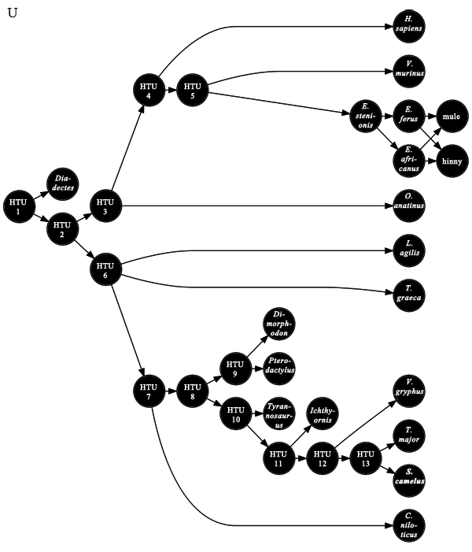 |
| Discussion |
In the example context, U = Crocodylus niloticus ∪ Diadectes ∪ Dimorphodon ∪ Equus africanus ∪ Equus ferus ∪ Equus stenonis ∪ Homo sapiens ∪ Ichthyornis ∪ Lacerta agilis ∪ Ornithorhynchus anatinus ∪ Pterodactylus ∪ Struthio camelus ∪ Testudo graeca ∪ Tinamus major ∪ Tyrannosaurus ∪ Vespertilio murinus ∪ Vultur gryphus ∪ hinny ∪ mule ∪ HTU1 ∪ HTU2 ∪ HTU3 ∪ HTU4 ∪ HTU5 ∪ HTU6 ∪ HTU7 ∪ HTU8 ∪ HTU9 ∪ HTU10 ∪ HTU11 ∪ HTU12 ∪ HTU13. |
Immediate Predecessor
| Definition URL | http://namesonnodes.org/ns/math/2009#def-ImmediatePredecessor |
|---|---|
| Symbol | ⊲ |
| Class | Relation |
| Definition |
⊲ := {[X, Y] ∈ T2 | X is a parent unit of Y} |
| Discussion |
A phylogenetic hypothesis posits the existence of ancestor-descendant relationships between taxonomic units. An immediate successor, or child, to an ancestor is a descendant for which there are no intermediate descendants. |
| Implementation |
org.namesonnodes.domain.nodes::PhyloGraph.arcs
|
| MathML |
<csymbol xmlns="http://www.w3.org/1998/Math/MathML" definitionURL="http://namesonnodes.org/ns/math/2009#def-ImmediatePredecessor"/> |
|---|---|
| Formula | ⊲ |
| Discussion |
In the example context, ⊲ := {[HTU1, Diadectes], [HTU1, HTU2], [HTU2, HTU3], [HTU2, HTU6], [HTU3, Ornithorhynchus anatinus], [HTU3, HTU4], [HTU4, Homo sapiens], [HTU4, HTU5], [HTU5, Vespertilio murinus], [HTU5, Equus stenonis], [Equus stenonis, Equus africanus], [Equus stenonis, Equus ferus], [Equus africanus, mule], [Equus africanus, hinny], [Equus ferus, mule], [Equus ferus, hinny], [HTU6, Testudo graeca], [HTU6, Lacerta agilis], [HTU6, HTU7], [HTU7, Crocodylus niloticus], [HTU7, HTU8], [HTU8, HTU9], [HTU8, HTU10], [HTU9, Dimorphodon], [HTU9, Pterodactylus], [HTU10, Tyrannosaurus], [HTU10, HTU11], [HTU11, Ichthyornis], [HTU11, HTU12], [HTU12, Vultur gryphus], [HTU12, HTU13], [HTU13, Struthio camelus], [HTU13, Tinamus major]}. |
| MathML |
<apply xmlns="http://www.w3.org/1998/Math/MathML"> <csymbol definitionURL="http://namesonnodes.org/ns/math/2009#def-ImmediatePredecessor"/> <csymbol definitionURL="urn:isbn:0853010064::Equus+stenonis"/> <csymbol definitionURL="urn:isbn:0853010064::Equus+africanus"/> </apply> |
|---|---|
| Formula | Equus stenonis ⊲ Equus africanus |
| Discussion |
In the example context, this evaluates to true, since Equus stenonis is deemed a parent unit (immediate predecessor) of Equus africanus (asses). |
| MathML |
<apply xmlns="http://www.w3.org/1998/Math/MathML"> <csymbol definitionURL="http://namesonnodes.org/ns/math/2009#def-ImmediatePredecessor"/> <csymbol definitionURL="urn:isbn:0853010064::Equus+stenonis"/> <csymbol definitionURL="http://namesonnodes.org/ns/math/2009#otu-mule"/> </apply> |
|---|---|
| Formula | Equus stenonis ⊲ mule |
| Discussion |
In the example context, this evaluates to false. Although Equus stenonis is a predecessor of mule, it is not an immediate predecessor, since Equus africanus (asses) and Equus ferus (horses) are intermediate predecessors. |
Immediate Predecessor Or Equal
| Definition URL | http://namesonnodes.org/ns/math/2009#def-ImmediatePredecessorOrEqual |
|---|---|
| Symbol | ⊴ |
| Class | Relation |
| Definition |
⊴ := {[X, Y] ∈ T2 | X ⊲ Y or X = Y} |
| Discussion |
This relation relates parents to children as well as to themselves. |
| Implementation |
org.namesonnodes.math.operations::ImmediatePredecessorOrEqual
|
| MathML |
<apply xmlns="http://www.w3.org/1998/Math/MathML"> <csymbol definitionURL="http://namesonnodes.org/ns/math/2009#def-ImmediatePredecessorOrEqual"/> <csymbol definitionURL="urn:isbn:0853010064::Equus+ferus"/> <csymbol definitionURL="urn:isbn:0853010064::Equus+ferus"/> <csymbol definitionURL="http://namesonnodes.org/ns/math/2009#otu-mule"/> </apply> |
|---|---|
| Formula | Equus ferus ⊴ Equus ferus ⊴ mule |
| Discussion |
In the example context, this evaluates to true, since Equus ferus = Equus ferus and Equus ferus ⊲ mule. |
Predecessor
| Definition URL | http://namesonnodes.org/ns/math/2009#def-Predecessor |
|---|---|
| Symbol | ≼ |
| Class | Relation |
| Definition |
≼ := {[X, Y] ∈ T2 | X ⊴ Y or there exists some Z ∈ T such that X ⊲ Z and Z ≼ Y}. or≼ is the transitive closure of ⊴. |
| Discussion |
The predecessor of a taxonomic unit is any ancestor of that unit, or that unit itself. |
| Implementation |
org.namesonnodes.math.operations::Predecessor
|
| MathML |
<apply xmlns="http://www.w3.org/1998/Math/MathML"> <csymbol definitionURL="http://namesonnodes.org/ns/math/2009#def-Predecessor"/> <csymbol definitionURL="http://namesonnodes.org/ns/math/2009#htu-1"/> <csymbol definitionURL="urn:isbn:0853010064::Homo+sapiens"/> </apply> |
|---|---|
| Formula | HTU1 ≼ Homo sapiens |
| Discussion |
In the example context, this evaluates to true, since HTU1 precedes Homo sapiens (humans) through the lineage [HTU1, HTU2, HTU3, HTU5, Homo sapiens]. |
Proper Predecessor
| Definition URL | http://namesonnodes.org/ns/math/2009#def-ProperPredecessor |
|---|---|
| Symbol | ≺ |
| Class | Relation |
| Definition |
≺ := {[X, Y] ∈ T2 | X ≼ Y and X ≠ Y} or≺ := {[X, Y] ∈ T2 | X ⊲ Y or for some Z ∈ T, X ⊲ Z and Z ≺ Y} |
| Discussion |
The proper predecessor of a taxonomic unit is any ancestor of that unit. |
| Implementation |
org.namesonnodes.math.operations::ProperPredecessor
|
| MathML |
<apply xmlns="http://www.w3.org/1998/Math/MathML"> <csymbol definitionURL="http://namesonnodes.org/ns/math/2009#def-ProperPredecessor"/> <csymbol definitionURL="urn:isbn:0853010064::Homo+sapiens"/> <csymbol definitionURL="urn:isbn:0853010064::Homo+sapiens"/> </apply> |
|---|---|
| Symbol | Homo sapiens ≺ Homo sapiens |
| Discussion |
This evaluates as false. Homo sapiens (humans) is a predecessor of itself, but not a proper predecessor. |
Maximal
| Definition URL | http://namesonnodes.org/ns/math/2009#def-Maximal |
|---|---|
| Symbol | max |
| Class | Function |
| Definition |
max : 2U → 2U
|
| Discussion |
The maximal members of a taxon comprise the union of all subunits which are not ancestral to any other subunit. The concept of "maximal" correlates to what some authors have termed "last", "latest", or "most recent", as in "most recent common ancestor". However, unlike those other terms, "maximal" is not tied to chronology; the maximal members of a taxon are not necessarily contemporaries. Other potential synonyms of "maximal" are "final", "terminal", or "leafmost". The symbol for this function is the same as that of a MathML function, |
| Implementation | org.namesonnodes.math.operations::Maximal |
| MathML |
<apply xmlns="http://www.w3.org/1998/Math/MathML"> <csymbol definitionURL="http://namesonnodes.org/ns/math/2009#def-Maximal"/> <csymbol definitionURL="http://namesonnodes.org/ns/math/2009#def-UniversalTaxon"/> </apply> |
|---|---|
| Illustration | 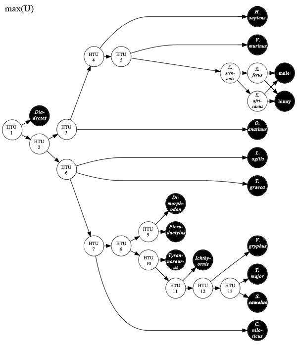 |
| Discussion |
The maximal units of the universal taxon include all units with no descendants (proper successors). In the example context, this includes all taxonomic units except for the hypothetical taxonomic units and the species of Equus. |
Minimal
| Definition URL | http://namesonnodes.org/ns/math/2009#def-Minimal |
|---|---|
| Symbol | min |
| Class | Function |
| Definition |
min : 2U → 2U
|
| Discussion |
The minimal members of a taxon comprise the union of all subunits which are not descended from any other subunits. The concept of "minimal" correlates to what some authors have termed "earliest", "first", or "least recent", as in "least recent common ancestor". However, unlike those other terms, "minimal" is not tied to chronology; the minimal members of a taxon are not necessarily contemporaries. Other potential synonyms of "minimal" are "initial", "basalmost", or "rootmost". The symbol for this function is the same as that of a MathML function, |
| Implementation | org.namesonnodes.math.operations::Minimal |
| MathML |
<apply xmlns="http://www.w3.org/1998/Math/MathML"> <csymbol definitionURL="http://namesonnodes.org/ns/math/2009#def-Minimal"/> <csymbol definitionURL="http://namesonnodes.org/ns/math/2009#def-UniversalTaxon"/> </apply> |
|---|---|
| Illustration | 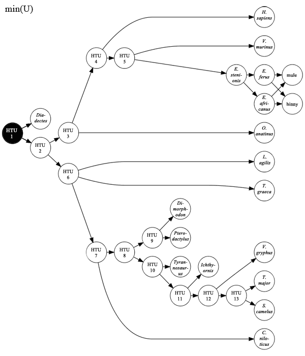 |
| Discussion |
The maximal units of the universal taxon include all units with no ancestors (proper predecessors). In the example context, this is equivalent to HTU1, the only unit with no ancestors. |
Predecessor Union
| Definition URL | http://namesonnodes.org/ns/math/2009#def-PredecessorUnion |
||||
|---|---|---|---|---|---|
| Symbol | prc∪ | ||||
| Class | Function | ||||
| Definition |
prc∪ : 2U → 2U prc∪(A) := {x ∈ U | for some y ∈ A, x ≼ y} or
|
||||
| Discussion |
The predecessor union of a taxon includes all members of that taxon as well as all ancestors of all members of that taxon. The predecessor union of a taxon is always a superset of the predecessor intersection. |
||||
| Implementation | org.namesonnodes.math.operations::PredecessorUnion |
| MathML |
<apply xmlns="http://www.w3.org/1998/Math/MathML"> <csymbol definitionURL="http://namesonnodes.org/ns/math/2009#def-PredecessorUnion"/> <apply> <union/> <csymbol definitionURL="urn:isbn:0853010064::Pterodactylus"/> <csymbol definitionURL="urn:isbn:3906166481::Vultur+gryphus"/> </apply> </apply> |
|---|---|
| Illustration | 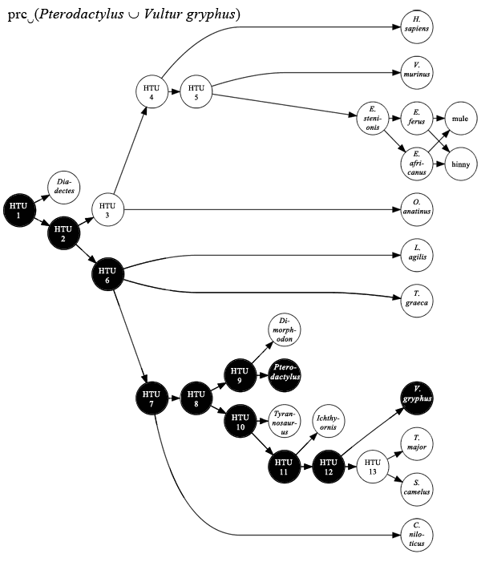 |
| Discussion |
The predecessor union of Pterodactylus and Vultur gryphus (Andean condors) includes both of those units as well as every unit ancestral to either one of them, or to both. |
Predecessor Intersection
| Definition URL | http://namesonnodes.org/ns/math/2009#def-PredecessorIntersection |
||||
|---|---|---|---|---|---|
| Symbol | prc∩ | ||||
| Class | Function | ||||
| Definition |
prc∩ : 2U → 2U prc∩(A) := {x ∈ U | for all y ∈ A, x ≼ y} or
|
||||
| Discussion |
The predecessor intersection of a taxon includes all predecessors shared by all subunits of that taxon. The predecessor intersection of a taxon is always a subset of the predecessor union. |
||||
| Implementation | org.namesonnodes.math.operations::PredecessorIntersection |
| MathML |
<apply xmlns="http://www.w3.org/1998/Math/MathML"> <csymbol definitionURL="http://namesonnodes.org/ns/math/2009#def-PredecessorIntersection"/> <apply> <union/> <csymbol definitionURL="urn:isbn:0853010064::Pterodactylus"/> <csymbol definitionURL="urn:isbn:0853010064::Vultur+gryphus"/> </apply> </apply> |
|---|---|
| Illustration | 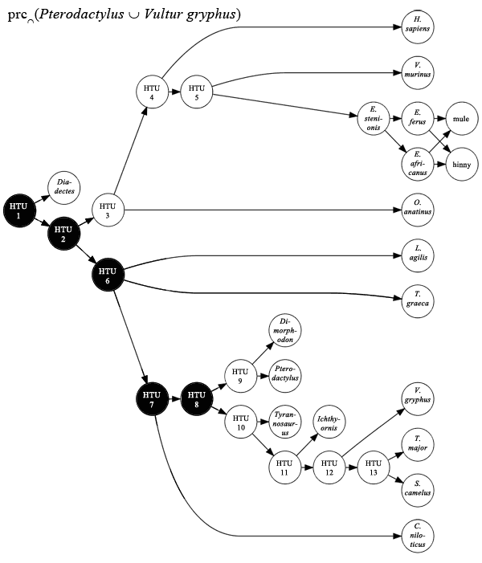 |
| Discussion | The predecessor intersection of Pterodactylus and Vultur gryphus (Andean condors) includes only those units which precede both of them. This is equivalent to the ancestral lineage of Ornithodira, the clade that includes Pterodactylus and Vultur gryphus. |
Successor Union
| Definition URL | http://namesonnodes.org/ns/math/2009#def-SuccessorUnion |
||||
|---|---|---|---|---|---|
| Symbol | suc∪ | ||||
| Class | Function | ||||
| Definition |
suc∪ : 2U → 2U suc∪(A) := {x ∈ U | for some y ∈ A, x ≽ y} or
|
||||
| Discussion |
The successor union of a taxon includes all subunits of that taxon as well as all descendants of all subunits of that taxon. The successor union of a taxon is always a superset of the successor intersection. |
||||
| Implementation | org.namesonnodes.math.operations::SuccessorUnion |
| MathML |
<apply xmlns="http://www.w3.org/1998/Math/MathML"> <csymbol definitionURL="http://namesonnodes.org/ns/math/2009#def-SuccessorUnion"/> <apply> <union/> <csymbol definitionURL="urn:isbn:0853010064::Equus+stenonis"/> <csymbol definitionURL="urn:isbn:0853010064::Equus+africanus"/> </apply> </apply> |
|---|---|
| Illustration | 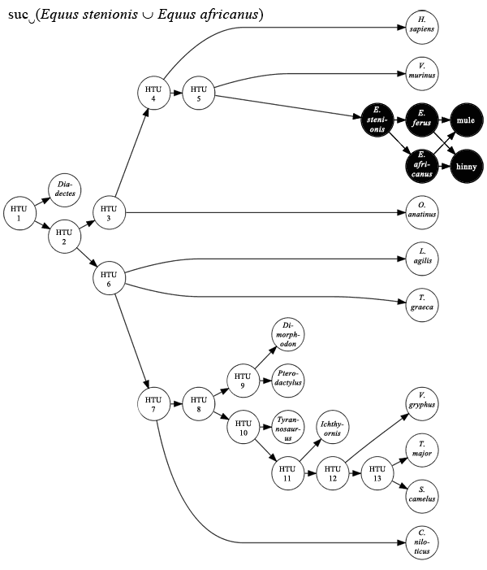 |
| Discussion |
The successor union of Equus stenonis and Equus africanus (asses) includes both of those units as well as every unit descended from either one of them, or from both.
Since Equus africanus is descended from Equus stenonis, this is the same as |
Successor Intersection
| Definition URL | http://namesonnodes.org/ns/math/2009#def-SuccessorIntersection |
||||
|---|---|---|---|---|---|
| Symbol | suc∩ | ||||
| Class | Function | ||||
| Definition |
suc∩ : 2U → 2U suc∩(A) := {x ∈ U | for all y ∈ A, x ≽ y} or
|
||||
| Discussion |
The successor intersection of a taxon includes all all shared successors of all subunits of that taxon. The successor intersection of a taxon is always a subset of the successor union. |
||||
| Implementation | org.namesonnodes.math.operations::SuccessorIntersection |
| MathML |
<apply xmlns="http://www.w3.org/1998/Math/MathML"> <csymbol definitionURL="http://namesonnodes.org/ns/math/2009#def-SuccessorIntersection"/> <apply> <union/> <csymbol definitionURL="urn:isbn:0853010064::Equus+stenonis"/> <csymbol definitionURL="urn:isbn:0853010064::Equus+africanus"/> </apply> </apply> |
|---|---|
| Illustration | 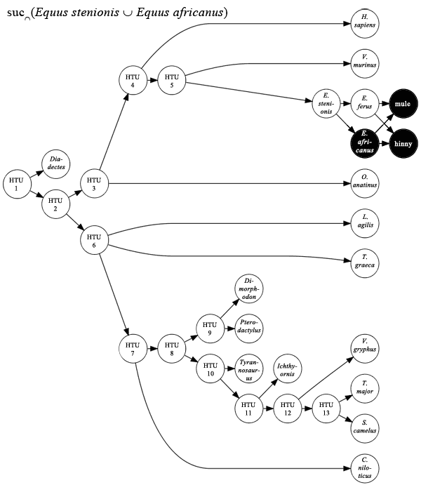 |
| Discussion |
The successor intersection of Equus stenonis and Equus africanus (asses) includes only the units that succeed both of them.
Since Equus africanus is descended from Equus stenonis, this is the same as |
Exclusive Predecessors
| Definition URL | http://namesonnodes.org/ns/math/2009#def-ExclusivePredecessors |
|---|---|
| Symbol | ← |
| Class | Function |
| Definition |
← : 2U × 2U → 2U A ← Z := prc∩(A) − prc∪(Z) |
| Discussion |
The exclusive predecessors of an internal taxon are all of its common predecessors minus the predecessor union of the external taxon. If A has no common predecessors, or all of those common predecessors are also predecessors of Z, then A ← Z = ∅. |
| Implementation | org.namesonnodes.math.operations::ExclusivePredecessors |
| MathML |
<apply xmlns="http://www.w3.org/1998/Math/MathML"> <csymbol definitionURL="http://namesonnodes.org/ns/math/2009#def-ExclusivePredecessors"/> <csymbol definitionURL="urn:isbn:0853010064::Vultur+gryphus"/> <csymbol definitionURL="urn:isbn:0853010064::Pterodactylus"/> </apply> </apply> |
|---|---|
| Illustration | 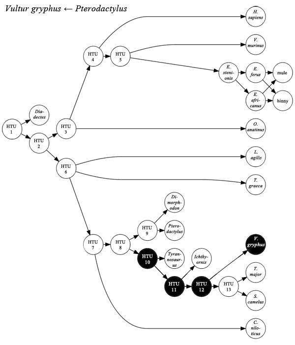 |
| Discussion |
The predecessor intersection of Vultur gryphus (Andean condors) exclusive of the predecessor union of Pterodactylus forms a lineage. The minimal unit of this lineage forms the cladogen for a branch-based clade (Dinosauromorpha). |
Synapomorphic Predecessors
| Definition URL | http://namesonnodes.org/ns/math/2009#def-SynapomorphicPredecessors |
|---|---|
| Symbol | @ |
| Class | Function |
| Definition |
@ : 2U × 2U → 2U Let P(x, y) := the set of all x–y paths in [T, ⊲]. Let V(p) := the set of all vertices in (i.e., members of) the path p. M @ A := {x ∈ prc∩(A) | for all y ∈ A, there exists some p ∈ P(x, y) such that V(p) ⊆ M} |
| Discussion |
Specifying synapomorphic predecessors requires two sets, one apomorphic (M) and the other representative (A). If A ⊈ M, then M @ A = ∅. There are also no synapomorphic predecessors if at least two members of A are in M due to convergence. |
| Implementation | org.namesonnodes.math.operations::SynapomorphicPredecessors |
| MathML |
<apply xmlns="http://www.w3.org/1998/Math/MathML"> <csymbol definitionURL="http://namesonnodes.org/ns/math/2009#def-SynapomorphicPredecessors"/> <csymbol definitionURL="uttp://namesonnodes.org/ns/math/2009#apomorphy-flight"/> <csymbol definitionURL="urn:isbn:0853010064::Vultur+gryphus"/> </apply> |
|---|---|
| Illustration | 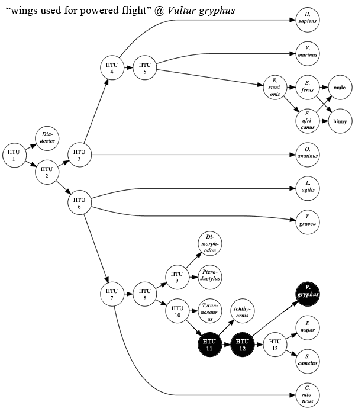 |
| Discussion |
The predecessors of Vultur gryphus which share wings used for powered flight synapomorphically with Vultur gryphus form a lineage of flying organisms. Note that this does not include any organisms with acquired flight independently. The minimal unit of this lineage forms the cladogen of an apomorphy-based clade (Avialae). |
Clade
| Definition URL | http://namesonnodes.org/ns/math/2009#def-Clade |
||||
|---|---|---|---|---|---|
| Symbol | Clade | ||||
| Class | Function | ||||
| Definition |
Clade : 2U → 2U
|
||||
| Discussion |
This function maps any taxon to a clade, or to the empty set. If the argument's minimal members do not form a cladogen, then Clade yields the successor union of the maximal common predecessors of the argument (i.e., a node-based clade). If they do form a cladogen, then Clade yields the successor union of the argument. If (and only if) A has no common predecessors, then Clade(A) = ∅. Since all known organisms are theorized to descend from common ancestors, clades exist for all known taxa, in theory. Note that Clade(∅) = ∅. Note that, for every clade K, Clade(K) = K. |
||||
| Implementation | org.namesonnodes.math.operations::Clade |
| MathML |
<apply xmlns="http://www.w3.org/1998/Math/MathML"> <csymbol definitionURL="http://namesonnodes.org/ns/math/2009#def-Clade"/> <csymbol definitionURL="urn:isbn:0853010064::Equus+ferus"/> </apply> |
|---|---|
| Illustration | 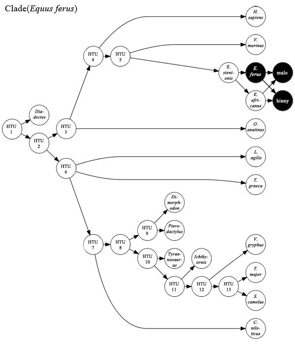 |
| Discussion |
This evaluates to all successors of Equus ferus (horses), which includes hinny and mule. This is an ancestor-based clade, that is, the argument (specifier) is a cladogen. This type of definition is not common in practice, but possible in theory. |
| MathML |
<apply xmlns="http://www.w3.org/1998/Math/MathML"> <csymbol definitionURL="http://namesonnodes.org/ns/math/2009#def-Clade"/> <apply> <union> <csymbol definitionURL="urn:isbn:0853010064::Homo+sapiens"/> <csymbol definitionURL="urn:isbn:0853010064::Ornithorhynchus+anatinus"/> </apply> </apply> |
|---|---|
| Illustration | 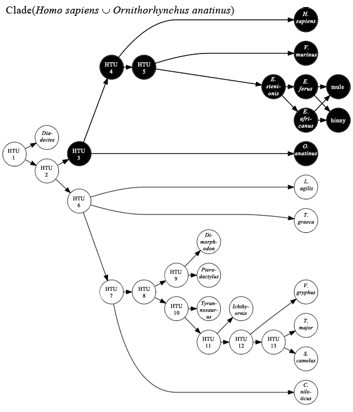 |
| Discussion |
This evaluates to all successors of the maximal common predecessors of Homo sapiens (humans) and Ornithorhynchus anatinus (platypuses). This is a node-based clade known as Mammalia. |
| MathML |
<apply xmlns="http://www.w3.org/1998/Math/MathML"> <csymbol definitionURL="http://namesonnodes.org/ns/math/2009#def-Clade"/> <apply> <union> <csymbol definitionURL="http://namesonnodes.org/ns/math/2009#otu-mule"/> <csymbol definitionURL="http://namesonnodes.org/ns/math/2009#otu-hinny"/> </apply> </apply> |
|---|---|
| Illustration | 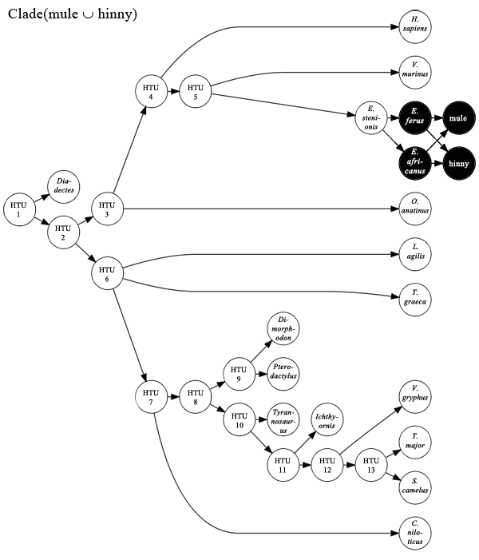 |
| Discussion |
This evaluates to all successors of the maximal common predecessors of mule and hinny. This is a node-based clade whose cladogen, in the example context, is Equus africanus ∪ Equus ferus. Note that, although the cladogen consists of two units, it is still a cladogen in the example context. Neither unit is ancestral to the other, and they both share at least one common successor (two, in fact). |
| MathML |
<apply xmlns="http://www.w3.org/1998/Math/MathML"> <csymbol definitionURL="http://namesonnodes.org/ns/math/2009#def-Clade"/> <apply> <csymbol definitionURL="http://namesonnodes.org/ns/math/2009#def-ExclusivePredecessors"/> <csymbol definitionURL="urn:isbn:0853010064::Vultur+gryphus"/> <csymbol definitionURL="urn:isbn:0853010064::Pterodactylus"/> </apply> </apply> |
|---|---|
| Illustration | 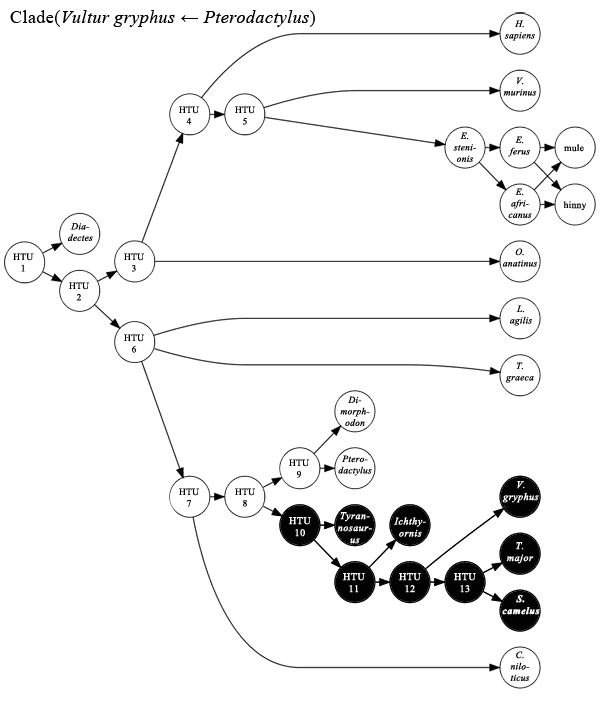 |
| Discussion |
This evaluates to a clade including Vultur gryphus (Andean condors) and excluding Pterodactylus). This is a branch-based clade known as Dinosauromorpha. (Note, though, that the actual definition of Dinosauromorpha is different.) |
| MathML |
<apply xmlns="http://www.w3.org/1998/Math/MathML"> <csymbol definitionURL="http://namesonnodes.org/ns/math/2009#def-Clade"/> <apply> <csymbol definitionURL="http://namesonnodes.org/ns/math/2009#def-SynapomorphicPredecessors"/> <csymbol definitionURL="http://namesonnodes.org/ns/math/2009#apomorphy-flight"/> <csymbol definitionURL="urn:isbn:0853010064::Vultur+gryphus"/> </apply> </apply> |
|---|---|
| Illustration | 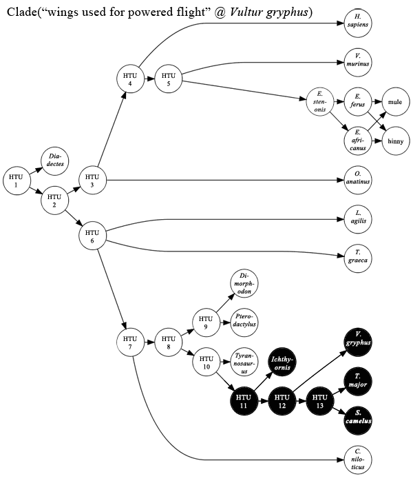 |
| Discussion |
This evaluates to the a clade including all organisms to posses wings used for powered flight synapomorphic with those of Vultur gryphus (Andean condors). It also includes organisms whose ancestor possessed the synapomorphy, even if they themselves have lost it, e.g., Struthio camelus (ostriches). This is an apomorphy-based clade known as Avialae. |
Crown Clade
| Definition URL | http://namesonnodes.org/ns/math/2009#def-CrownClade |
|---|---|
| Symbol | Crown |
| Class | Function |
| Definition |
Crown : 2U × 2U → 2U Crown(A, E) := Clade(Clade(A) ∩ E) |
| Discussion |
Specifying a crown clade requires two taxa. One (A) is used to specify a bounding clade. The other (E) is used to indicate which units are to be considered extant. The crown clade is the node-based clade specified by the bounding clade's taxon's extant subunits. The bounding clade is always a superset of the crown clade. This includes the possibility that the clades may be identical. If Clade(A) itself is a crown clade (using E as the criterion for being considered extant), then this function evaluates as A. |
| Implementation | org.namesonnodes.math.operations::CrownClade |
| MathML |
<apply xmlns="http://www.w3.org/1998/Math/MathML"> <csymbol definitionURL="http://namesonnodes.org/ns/math/2009#def-CrownClade"> <apply> <union/> <csymbol definitionURL="urn:isbn:0853010064::Tyrannosaurus"/> <csymbol definitionURL="urn:isbn:0853010064::Vultur+gryphus"/> </apply> <csymbol definitionURL="urn:iso:8601::2010"> </apply> |
|---|---|
| Illustration | 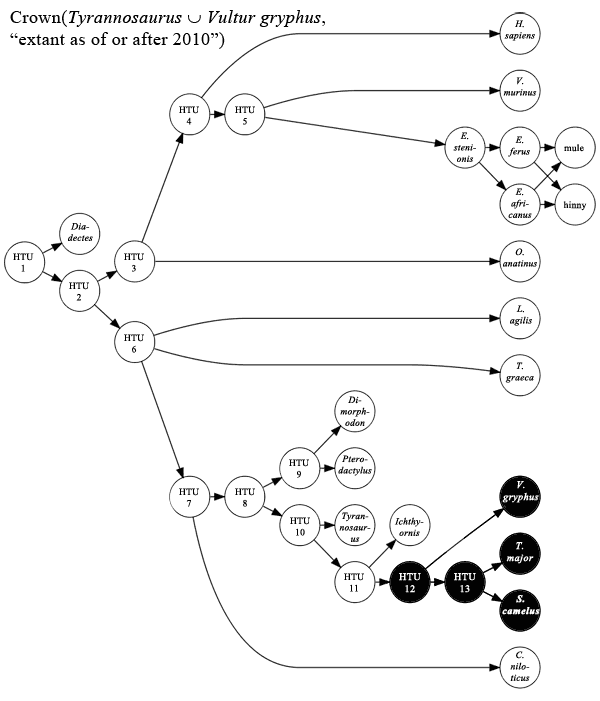 |
| Discussion | This is a node-modified crown clade definition. It specifies a node-based bounding clade: Clade(Tyrannosaurus ∪ Vultur gryphus), which has the name Tyrannoraptora. The extant subunits of Tyrannoraptora are used to specify the crown clade. The end result is the crown clade Aves. |
| MathML |
<apply xmlns="http://www.w3.org/1998/Math/MathML"> <csymbol definitionURL="http://namesonnodes.org/ns/math/2009#def-CrownClade"> <apply> <csymbol definitionURL="http://namesonnodes.org/ns/math/2009#def-ExclusivePredecessors/> <csymbol definitionURL="urn:isbn:0853010064::Vultur+gryphus"/> <csymbol definitionURL="urn:isbn:0853010064::Ptrodactylus"/> </apply> <csymbol definitionURL="urn:iso:8601::2010"> </apply> |
|---|---|
| Illustration | 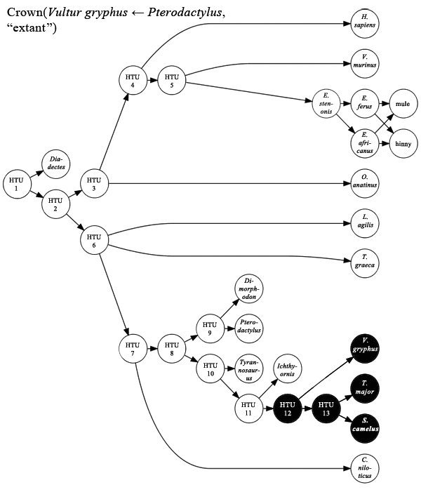 |
| Discussion | This is a branch-modified crown clade definition. It specifies a branch-based bounding clade: Clade(Vultur gryphus ← Pterodactylus), which has the name Dinosauromorpha. The extant subunits of Dinosauromorpha are used to specify the crown clade. The end result is the crown clade Aves. |
| MathML |
<apply xmlns="http://www.w3.org/1998/Math/MathML"> <csymbol definitionURL="http://namesonnodes.org/ns/math/2009#def-CrownClade"> <apply> <csymbol definitionURL="http://namesonnodes.org/ns/math/2009#def-SynapomorphicPredecessors/> <csymbol definitionURL="http://namesonnodes.org/ns/math/2009#apomorphy-flight/> <csymbol definitionURL="urn:isbn:0853010064::Vultur+gryphus"/> </apply> <csymbol definitionURL="urn:iso:8601::2010"> </apply> |
|---|---|
| Illustration | 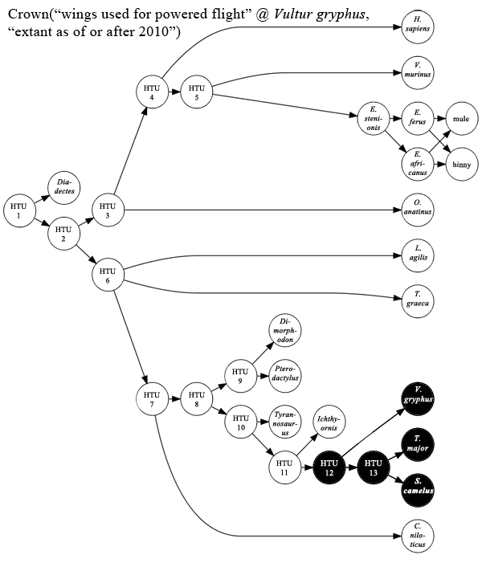 |
| Discussion | This is an apomorphy-modified crown clade definition. It specifies an apomorphy-based bounding clade: Clade("wings used for powered flight" in Vultur gryphus), which has the name Avialae. The extant subunits of Avialae are used to specify the crown clade. The end result is the crown clade Aves. |
Total Clade
| Definition URL | http://namesonnodes.org/ns/math/2009#def-TotalClade |
|---|---|
| Symbol | Total |
| Class | Function |
| Definition |
Total : 2U × 2U → 2U Let C := Crown(A, E). Total(A, E) := Clade(C ← (E − C)). |
| Implementation | org.namesonnodes.math.operations::TotalClade |
| Discussion |
Specifying a total clade requires two taxa. One (A) specifies the corresponding (internal) crown clade (C). The other (E) is used to indicate which units are to be considered extant. The total clade is a branch-based clade consisting of everything sharing more ancestry with the crown clade (C) than with anything else extant. |
| MathML |
<apply xmlns="http://www.w3.org/1998/Math/MathML"> <csymbol definitionURL="http://namesonnodes.org/ns/math/2009#def-TotalClade"/> <apply> <union/> <csymbol definitionURL="urn:isbn:0853010064::Struthio+camelus"/> <csymbol definitionURL="urn:isbn:0853010064::Vultur+gryphus"/> </apply> <csymbol definitionURL="urn:iso:8601::2010"/> </apply> |
|---|---|
| Illustration | 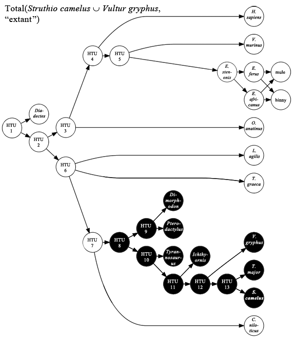 |
| Discussion |
Crown(Struthio camelus ∪ Vultur gryphus, "extant as of or after 2010") = Aves. Total(Aves, "extant as of or after 2010") is a branch-based clade where avians are the internal specifiers and extant non-avians are the external specifiers. Since, in the example context, Crocodylus niloticus is the closest extant outgroup to Aves, this is equivalent to Clade(Aves ← C. niloticus). This total clade is known by several names, including Pan-Aves and Avemetatarsalia. |
Appendix I.—Implemented MathML-Content Elements
MathML-Content provides methods for modelling a wide variety of mathematical entities. Since Names on Nodes only deals with logic and set theory, only certain elements have been implemented. The following is a list of all MathML-Content element which have been implemented in Names on Nodes, with notes as necessary. Other elements may work, but are not guaranteed.
and
|
|
|---|---|
apply
|
The type attribute may be set to "boolean" or "set".
|
ci
|
The |
csymbol
|
The
The |
declare
|
The |
emptyset
|
May be used wherever taxa may be used. |
eq
|
|
false
|
|
implies
|
|
intersect
|
|
math
|
The last child element of a |
neq
|
|
not
|
|
notprsubset
|
|
notsubset
|
|
or
|
|
otherwise
|
|
piece
|
|
piecewise
|
The |
prsubset
|
|
setdiff
|
|
subset
|
|
true
|
|
union
|
|
xor
|
Appendix II.—Equivalence Between Biological and Mathematical Terms
| Biological Term | Mathematical Term | Notes |
|---|---|---|
| organism or individual |
element or vertex |
|
| taxon | set | A taxon is a set of organisms. |
| subtaxon | subset | |
| supertaxon | superset | |
| taxonomic unit | finest set | |
| phylogenetic hypothesis | directed, acyclic graph or partially-ordered set |
|
| ancestor | proper predecessor | |
| descendant | proper successor | |
| parent | immediate predecessor or head |
|
| child | immediate successor or tail |
|
| parent-child relation | edge or arc |
|
| lineage | path | A path is a type of list. The members of a path constitue a chain. |
| cladogen | antichain with a non-empty successor intersection | |
| common ancestors | predecessor intersection | |
| common descendants | successor intersection | |
| basalmost or initial or rootmost |
minimal | |
| final or leafmost or terminal |
maximal | |
| polythetic taxon | union | |
| monothetic taxon | intersection | |
| rank-level taxonomy | partition | |
| higher rank-level taxonomy | coarser partition | |
| lower rank-level taxonomy | finer partition | |
| related | connected | |
| filially related | comparable |